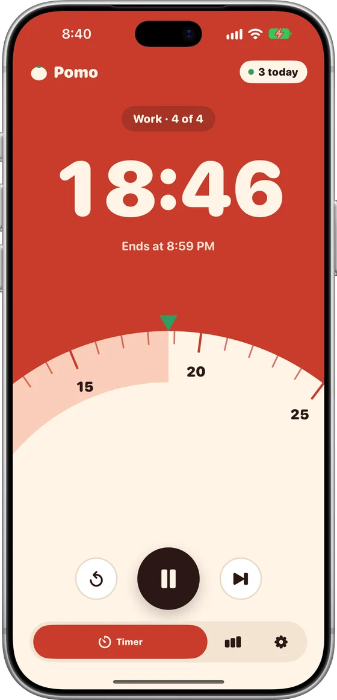
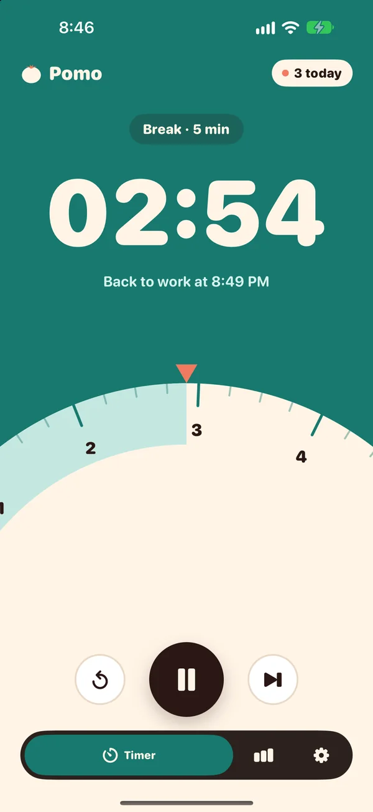
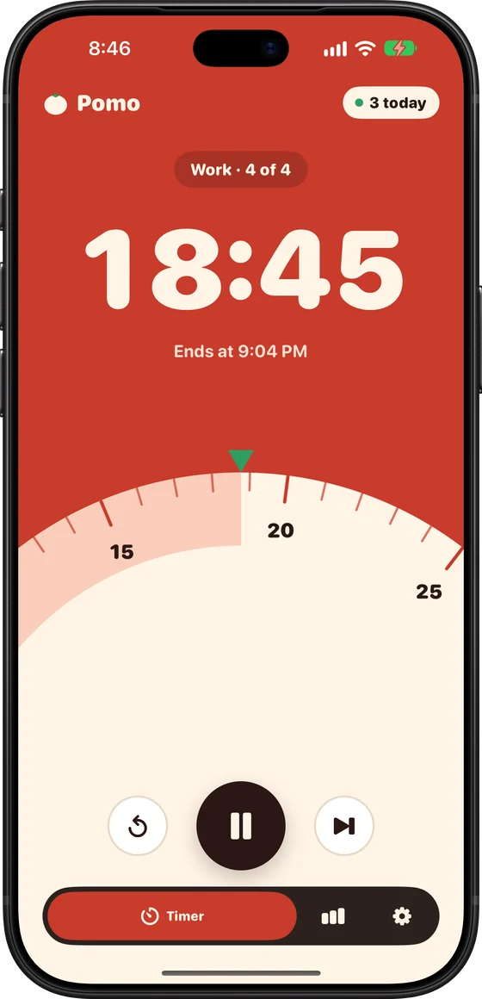
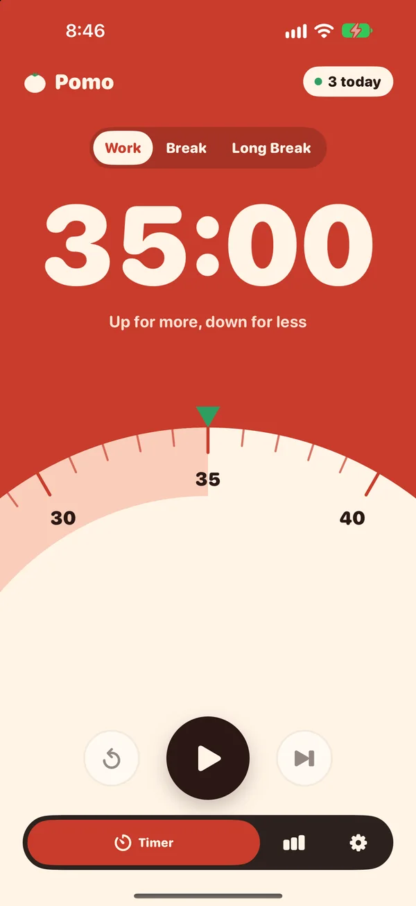
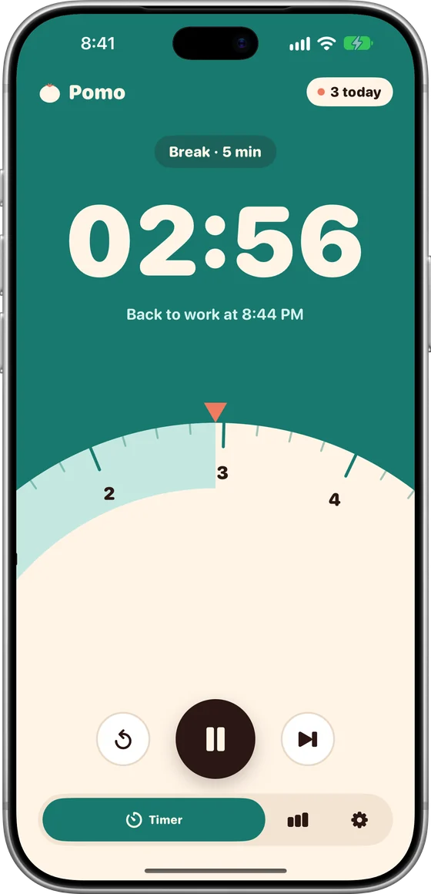
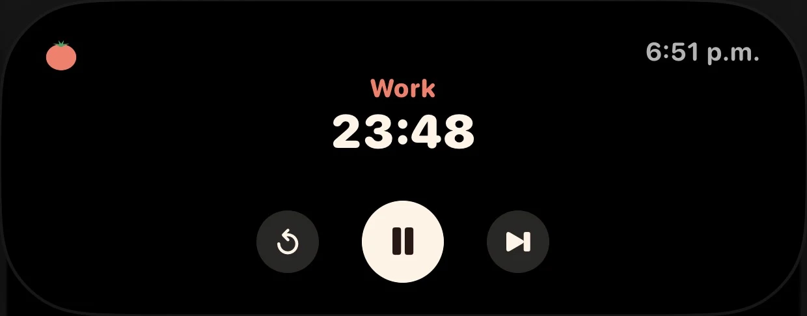
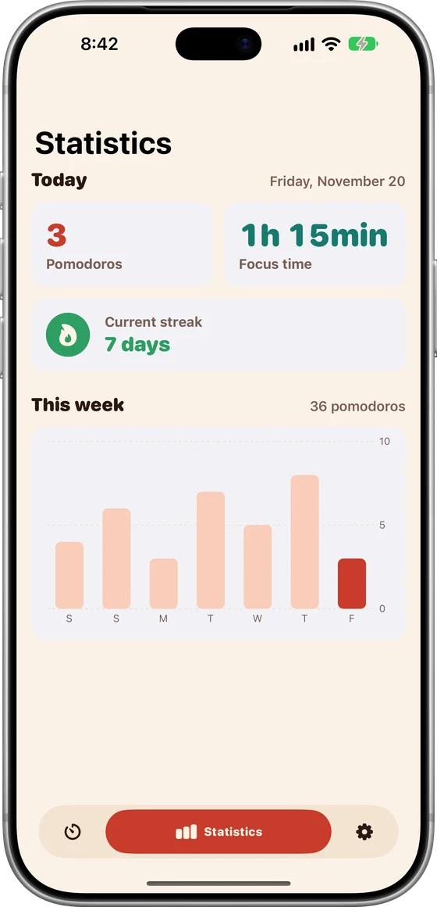
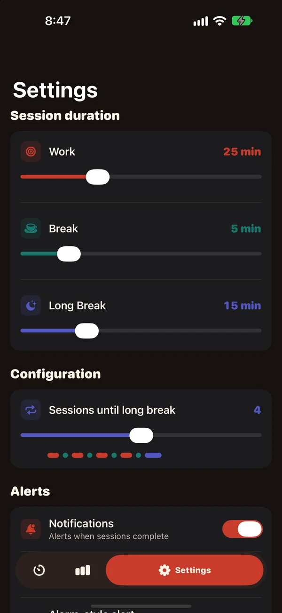
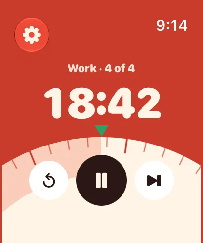
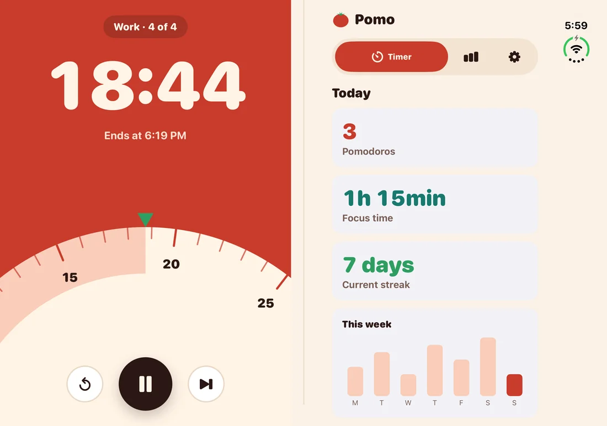

Focus for real. Enfócate de verdad.
A Pomodoro timer with the soul of a kitchen timer. Work in focused blocks, take breaks on time and watch your day add up, on iPhone, Apple Watch and iPhone Duo. Un temporizador Pomodoro con alma de temporizador de cocina. Trabaja en bloques de enfoque, descansa a tiempo y mira cómo avanza tu día, en iPhone, Apple Watch e iPhone Duo.
Free · No ads · No account · Your data stays on your devicesGratis · Sin anuncios · Sin cuentas · Tus datos se quedan en tus dispositivos


focus blocks, or any length you likepor bloque de enfoque, o lo que tú quieras
sessions per cycle before a long breaksesiones por ciclo antes del descanso largo
screens: iPhone, Apple Watch and iPhone Duopantallas: iPhone, Apple Watch e iPhone Duo
ads, accounts or trackinganuncios, cuentas o rastreo
Everything a Pomodoro needs. Nothing it doesn’t.Todo lo que un Pomodoro necesita. Nada más.

A kitchen timer that turns with youUn temporizador de cocina que gira contigo
The dial turns with every minute, like the tomato-shaped timer that gave the technique its name. You see what’s left, and when you’ll be done, at a glance.La carátula gira con cada minuto, como el temporizador con forma de tomate que le dio nombre a la técnica. Ves cuánto falta, y a qué hora terminas, con solo mirar.

Set the time with one fingerAjusta el tiempo con un dedo
Hold the timer and slide up or down. Every minute is a haptic tick, just like the iPhone Clock app.Mantén presionado el temporizador y desliza hacia arriba o hacia abajo. Cada minuto se siente con una vibración, como en el Reloj del iPhone.

Rest on time, in its own colorDescansa a tiempo, cada pausa en su color
Tomato for work, teal for short breaks, indigo for the long one. You always know where you are in the cycle.Tomate para trabajar, verde azulado para el descanso corto e índigo para el largo. Siempre sabes en qué parte del ciclo vas.

In the Dynamic Island, even with the app closedEn la Dynamic Island, aunque cierres la app
- Pause, resume, reset or skip from the Lock Screen and the Dynamic Island.Pausa, reanuda, reinicia o salta desde la pantalla de bloqueo y la Dynamic Island.
- When a session ends, Next starts the following one without opening Pomo.Al terminar una sesión, Siguiente empieza la que sigue sin abrir Pomo.
- Time Sensitive alerts with Pomo’s own sounds, and optional alarm-style alerts that ring even on silent (iOS 26 or later).Avisos urgentes con los sonidos de Pomo, y alertas tipo alarma opcionales que suenan aunque el iPhone esté en silencio (iOS 26 o posterior).


See your day add upMira cómo avanza tu día
Pomodoros, focus time and your daily streak, with a chart of the week. Tune session lengths, cycles, sounds and alerts to your rhythm.Pomodoros, tiempo de enfoque y racha de cada día, con la gráfica de la semana. Ajusta sesiones, ciclos, sonidos y alertas a tu ritmo.

On your wrist tooTambién en tu muñeca
- The same timer and dial, with its own alerts: it taps your wrist when a session ends.El mismo temporizador y la misma carátula, con sus propias alertas: te toca la muñeca al terminar cada sesión.
- Start on the Watch, pause on the iPhone: both stay in sync, and every session counts once.Empieza en el reloj y pausa en el iPhone: los dos se mantienen sincronizados y cada sesión cuenta una sola vez.
- Complications for your watch face and the Smart Stack.Complicaciones para tu carátula y el Smart Stack.

Unfold it: timer and stats side by sideÁbrelo: temporizador y estadísticas lado a lado
On the inner screen the timer sits next to your day. Half-fold it like a book and the timer stands up top with the controls below. Closed, the outer screen keeps the essentials.En la pantalla interior el temporizador queda junto a tu día. Dóblalo a la mitad como un libro y el temporizador queda arriba con los controles abajo. Cerrado, la pantalla exterior conserva lo esencial.
Start a Pomodoro from anywhereEmpieza un Pomodoro desde donde estés
Control CenterCentro de control
Start or pause the timer without opening any app.Inicia o pausa el temporizador sin abrir ninguna app.
Today widgetWidget de Hoy
Today’s pomodoros, focus time and streak on your Home Screen.Los pomodoros, el enfoque y la racha de hoy en tu pantalla de inicio.
Siri and ShortcutsSiri y Atajos
Start a focus session or a break with your voice, or from your automations.Empieza un bloque de enfoque o un descanso con tu voz, o desde tus automatizaciones.
Alarm-style alertsAlertas tipo alarma
Optional, on iOS 26 or later: the end of a session rings even on silent.Opcionales, con iOS 26 o posterior: el final de la sesión suena aunque estés en silencio.
Its own soundsSus propios sonidos
A sound for work, one for breaks and one for the long break.Un sonido para el trabajo, otro para el descanso y otro para el descanso largo.
Private by designPrivado de verdad
No account, no analytics, no ads. Your sessions never leave your iPhone and Apple Watch.Sin cuenta, sin analítica, sin anuncios. Tus sesiones nunca salen de tu iPhone y tu Apple Watch.
Frequently askedPreguntas frecuentes
What is the Pomodoro Technique?¿Qué es la técnica Pomodoro?
You work in focused blocks (25 minutes by default) with short breaks in between, and take a longer break after every four. Pomo runs the cycle for you.Trabajas en bloques de enfoque (25 minutos de forma predeterminada) con descansos cortos entre ellos, y tomas un descanso largo cada cuatro. Pomo lleva el ciclo por ti.
Is Pomo free?¿Pomo es gratis?
Yes. No ads, no in-app purchases and no account.Sí. Sin anuncios, sin compras dentro de la app y sin cuenta.
Will the alert sound if my iPhone is on silent?¿La alerta suena si mi iPhone está en silencio?
Turn on Settings › Alerts › Alarm-style alert (iOS 26 or later) and Pomo uses an alarm that rings even on silent or during a Focus. Otherwise you get a Time Sensitive notification.Activa Ajustes › Alertas › Alerta tipo alarma (iOS 26 o posterior) y Pomo usa una alarma que suena aunque estés en silencio o en un modo de concentración. Si no, recibes un aviso urgente.
Do I need my iPhone to use it on Apple Watch?¿Necesito el iPhone para usarlo en el Apple Watch?
No. The Watch app runs on its own and alerts you on your wrist; when both are nearby they keep the same timer and the same history.No. La app del reloj funciona sola y te avisa en la muñeca; cuando están cerca, ambos comparten el mismo temporizador y el mismo historial.
What does Pomo need?¿Qué necesita Pomo?
iOS 18 or later on iPhone and watchOS 11 or later on Apple Watch. Some features (the Liquid Glass icon, alarm-style alerts) need iOS 26.iOS 18 o posterior en iPhone y watchOS 11 o posterior en Apple Watch. Algunas funciones (el ícono con Liquid Glass y las alertas tipo alarma) necesitan iOS 26.
What happens to my data?¿Qué pasa con mis datos?
It stays on your devices. Pomo has no servers, no analytics and no tracking. Read the privacy policy.Se queda en tus dispositivos. Pomo no tiene servidores, ni analítica, ni rastreo. Lee la política de privacidad.
Your next pomodoro starts nowTu próximo pomodoro empieza ahora
Free on the App Store, for iPhone, Apple Watch and iPhone Duo.Gratis en la App Store, para iPhone, Apple Watch e iPhone Duo.
Download PomoDescarga Pomo